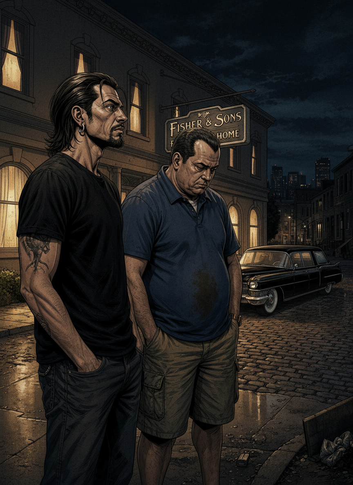
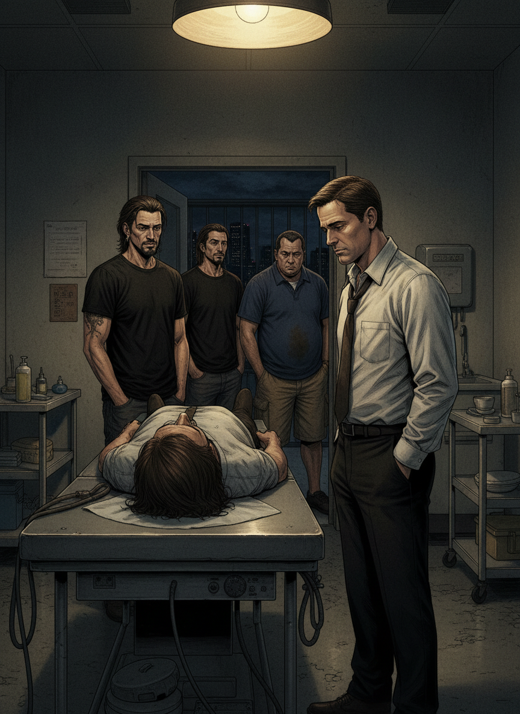
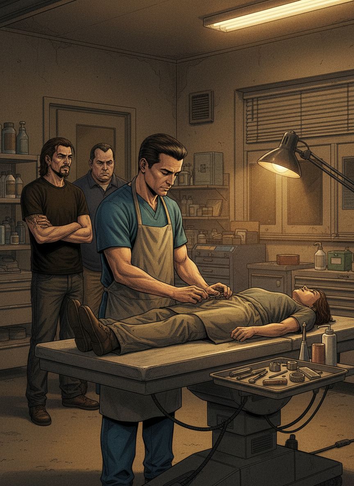
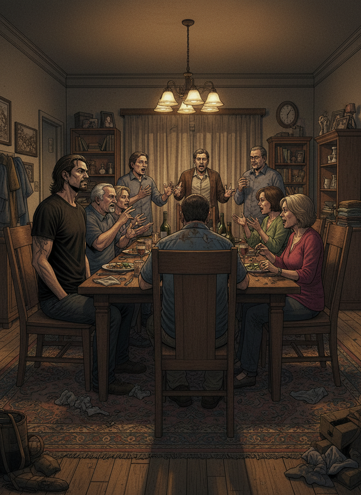
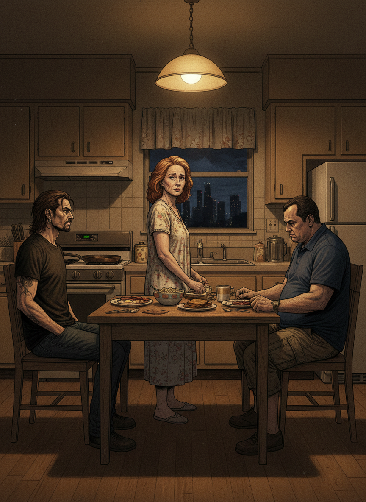
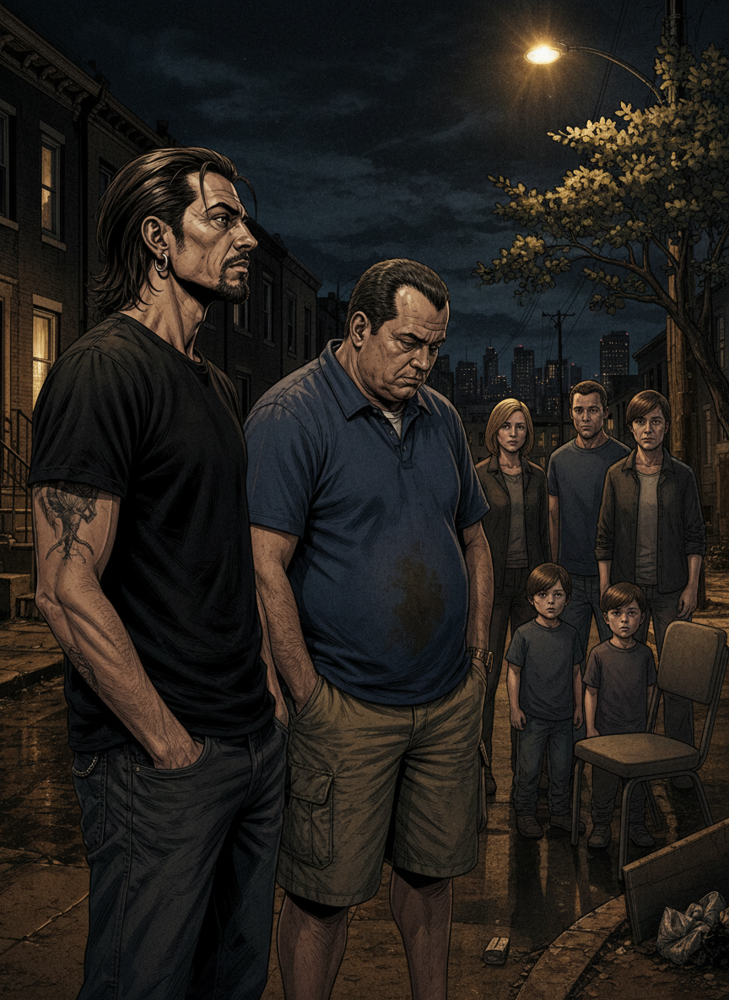

TONI
"¿Una funeraria? ¿Me estás poniendo una serie que transcurre en una funeraria?"
RULO
"Una familia que lleva una funeraria en Los Ángeles. El patriarca muere en el primer episodio. Y a partir de ahí... la cosa más oscura, más divertida y más profunda que ha dado jamás la televisión."
Los Ángeles. Una tarde cualquiera. El sofá de siempre.

TONI
"Venga, la pongo. Pero como sea un coñazo existencial te juro que te cobro el tiempo."

RULO
"Cada episodio empieza con una muerte diferente. Alguien distinto. De maneras distintas. Y eso que parece oscuro se vuelve el mejor recurso narrativo que he visto nunca."
¡¡FISHER & SONS!!
⚰
¡¡FUNERAL HOME!!

TONI
"El hijo mayor, Nate... el típico que huyó de la familia y vuelve obligado. Y el hermano, David... ¿cómo puede estar tan bien escrito un personaje que se odia a sí mismo y encima me cae tan bien?"
Y entonces la familia Fisher empezó a hacer su magia.

RULO
"Los personajes principales están todos de 10. Todos. Sin excepción. Peter Krause, Michael C. Hall, Frances Conroy... Ruth Fisher sola justifica la serie. Y Lauren Ambrose como Claire es una revelación absoluta."

TONI
"No puedo parar. No tiene ese ritmo adictivo de otras series pero la trama engancha diferente. Te importa lo que les pasa. Te importa de verdad."
¡¡A DOS METROS!!

RULO
"Hay mucho drama del bueno. Y hay que estar bien mentalmente para verla porque te hace pensar mucho. Pero tiene un humor negro que te hace reír para no llorar. Y los diálogos... excepcionales. Pasan en segundos del absurdo más cómico a la emoción más cruda."
TONI
"Es como una bofetada de realidad con guante de terciopelo."
La muerte está a dos metros. La locura familiar, a menos.

RULO
"La cuarta temporada pierde algo. Es más irregular. Lo reconozco. Pero la quinta... la quinta es historia pura de la televisión."

TONI
"¿El final? ¿El FINAL? Eso no es un final, eso es una patada en el alma con amor. No he podido hablar diez minutos después de verlo."
"Si A dos metros bajo tierra fuera una persona, estaría contando sus problemas en un bar con un cigarro colgando de la boca y una cerveza en la mano, todo mientras te suelta diálogos que son joyas negras dignas de Martin Riggs en modo filósofo."
— Pachi, versión sin filtros📈 Curva de calidad · 5 temporadas

TONI
"Vale. Nueve y medio. Y eso siendo generoso con mi corazón destrozado."
RULO
"Seguramente la mejor serie de la historia. Los personajes de 10, los diálogos excepcionales, el humor negro perfecto. Y el mejor final televisivo que se ha hecho. No hay duda."
Fisher & Sons. Cerramos por duelo. Nuestro.
⚰ veredicto final · zaska y acción
A DOS METROS BAJO TIERRA
9,5
HBO Max · 5 temporadas · 63 episodios · 2001–2005
Creador: Alan Ball
Peter Krause · Michael C. Hall · Frances Conroy · Rachel Griffiths · Lauren Ambrose · Freddy Rodríguez
El mejor final televisivo de la historia. Punto.
← Volver al blog
Creador: Alan Ball
Peter Krause · Michael C. Hall · Frances Conroy · Rachel Griffiths · Lauren Ambrose · Freddy Rodríguez
El mejor final televisivo de la historia. Punto.